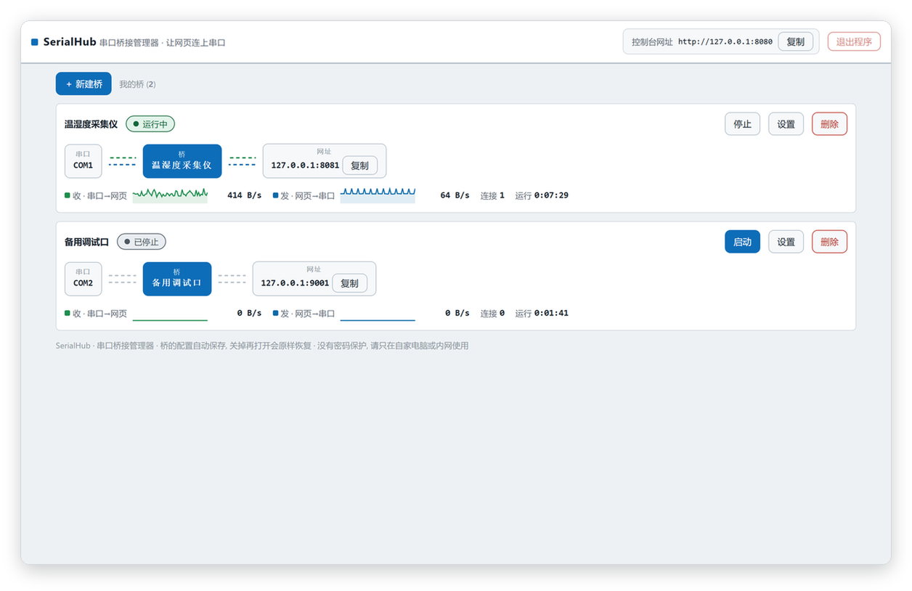
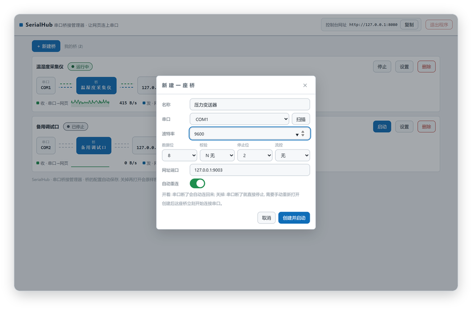
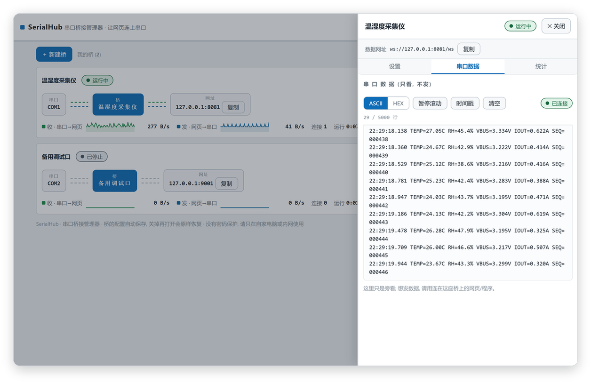
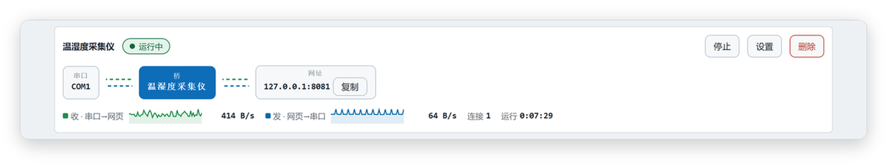
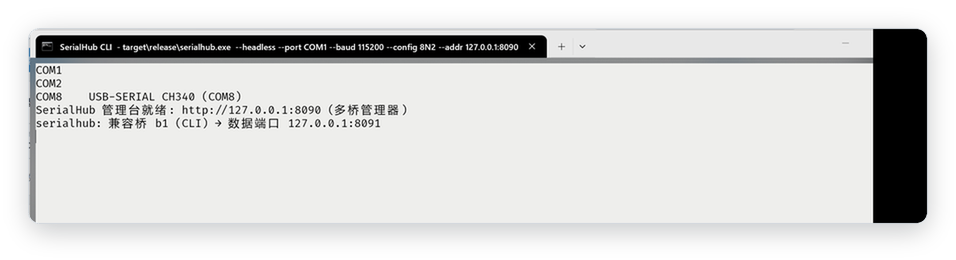
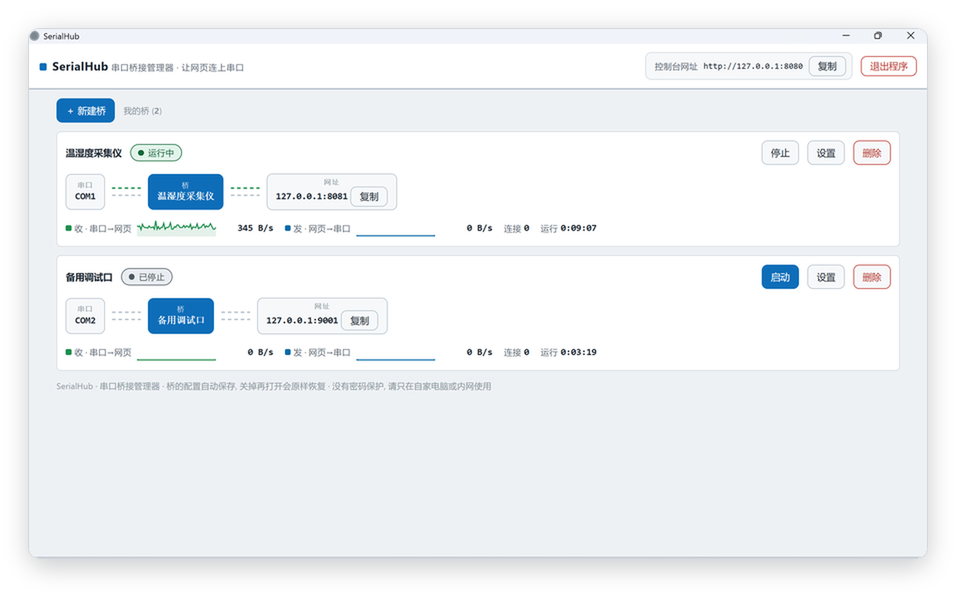

多桥并存管理台
一个网页同时管多座桥：建桥、启停、改配置、删除，重启程序后自动恢复。
SERIAL ⇄ WEB BRIDGE
SerialHub 把串口设备变成一条 WebSocket 字节管道，浏览器页面和脚本直接读写原始字节。多座桥在一个网页管理台里同时运行，建桥、启停、看速率都在一处。
当前版本 v1.7.1 · 三平台安装包
FEATURES
一个网页同时管多座桥：建桥、启停、改配置、删除，重启程序后自动恢复。
串口拔出再插回，桥自己按秒重试接回设备，网页和脚本不用做任何事。
每座桥一张流程图，有数据流动线路就点亮；收发速率和累计字节数每秒刷新。
内置浅色、深色、奥利奥、Windows 95 四套主题；放一个样式文件进主题文件夹就是新主题，切换不刷新页面。
双击打开就是带系统托盘的桌面应用；加一个参数变纯命令行，脚本和自动测试照样用。
一个可执行文件就是全部，下载解压即用，不用跑安装向导。
SCREENSHOTS






DOWNLOAD
2026-09-14 发布
Windows x86_64 · zip · 约 1.6 MB
serialhub-v1.7.1-windows-x86_64.zip
适合 Windows 10/11 64 位，下载解压后双击 serialhub.exe。
下载 Windows 版SHA256
Linux x86_64 · tar.gz · 约 1.9 MB
serialhub-v1.7.1-linux-x86_64.tar.gz
适合主流 64 位发行版，脚本与服务器场景可用纯命令行模式。
下载 Linux 版SHA256
macOS Apple Silicon · tar.gz · 约 1.9 MB · 未签名
serialhub-v1.7.1-macos-aarch64-unsigned.tar.gz
适合 Apple 芯片 (M 系列) Mac，首次打开见下方放行提示。
下载 macOS 版SHA256
macOS 安装包未签名：首次打开若被系统拦下，右键点文件选「打开」，再点一次「打开」即可放行。
系统要求：Windows 10/11（64 位）· Linux x86_64 · macOS（Apple Silicon）；管理台建议用现代浏览器打开。
下载后核对这串校验值与本地文件一致，即可确认安装包完整、未被篡改。
校验命令：Windows：certutil -hashfile <文件名> SHA256；Linux / macOS：shasum -a 256 <文件名>
国内直链通道筹备中，当前请从 GitHub Releases 下载
QUICK START
从上方下载对应平台的压缩包，解压出 serialhub 可执行文件。
Windows 双击 serialhub.exe；Linux / macOS 在终端执行 ./serialhub。
浏览器打开 http://127.0.0.1:8080，点「新建桥」选好串口，桥就跑起来了。
CHANGELOG
修复了窗口位置大小记不住、新建桥表单偶发参数丢失的问题；波特率选择框也重做得更好用了。
窗口大小和位置退出时保存、重启逐像素恢复；新建桥自动记住上次的串口和波特率，连建多座桥更快。
Windows 95 主题更正宗：全站直角、立体凹凸按钮、经典藏蓝标题栏。
新增 Windows 95 主题——经典青灰配色致敬老系统，成为内置第四套主题。
全站复制改成图标按钮并配「已复制」气泡；「打开面板」一键在浏览器打开管理台；托盘右键菜单更顺手。